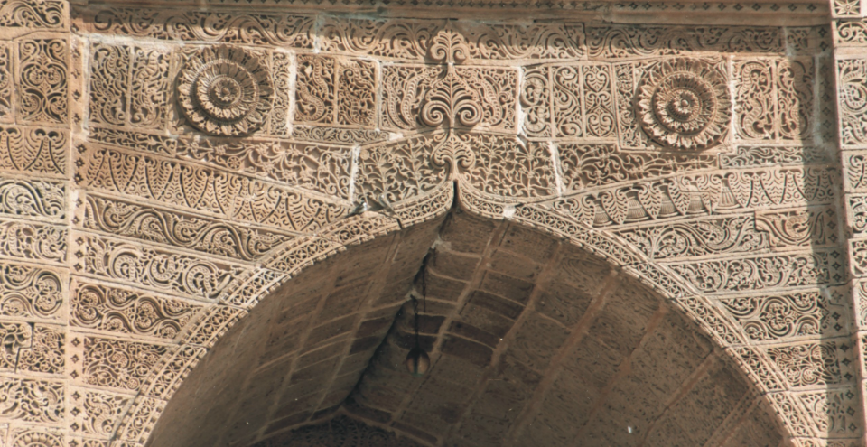
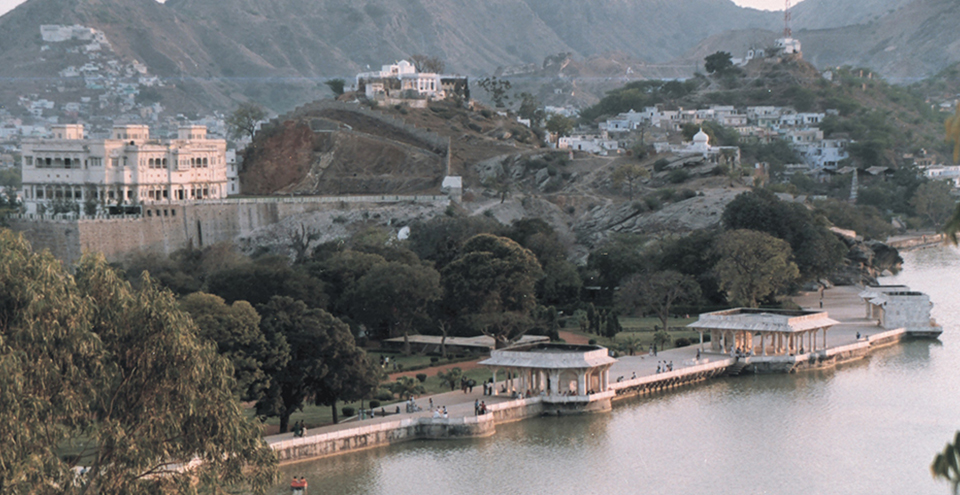

AJMER
THE DELIGHTFUL DARGAH DESTINATION
The city of Ajmer gets its name from ‘Ajay Meru’. Roughly translated, it means ‘invincible hills’. Nestled in the Aravallis south west of Jaipur, Ajmer was founded by Raja Ajaypal Chauhan in the 7th century AD. Till the late 12th century AD, Ajmer was the epicentre of the Chauhan dynasty. After Prithviraj Chauhan’s loss to Mohammed Ghori in 1193 AD, Ajmer became home to several dynasties. The Mughals in particular, fancied it as their favourite destination due to the presence of the holy Ajmer Sharif Dargah.
One of the early meetings between the Mughal King Jahangir and the Ambassador of the Court of Queen Elizabeth, Sir Thomas Roe, took place here in 1616. A few centuries later, the city was handed over to the British, making Ajmer the only region in Rajputana to be directly controlled by the East India Company. Ajmer is now regarded as an educational and cultural centre.
Ajmer is home to the famous Dargah Sharif, which houses the Tomb of Garib Nawaz, also known as Moinuddin Chisti, the founder of the Chisti order of Sufism. Ajmer is also known for Mayo College, one of the country’s first schools that was a stepping stone for British style of education. It is also a sacred city for Hindus and Muslims alike and is renowned for being a centre of history and culture and beauty.
ATTRACTIONS & PLACES TO VISIT AND EXPLORE IN AJMER

NATHMAL JI KI HAVELI
Two architect brothers built Nathmal Ji Ki Haveli in the 19th century. They worked on the haveli from two sides and the outcome is a beautiful blend of the symmetrical construction. Miniature style paintings and mighty tuskers carved out of yellow sandstone are used for decoration.

SALIM SINGH KI HAVELI
This haveli was built in the first half of the 18th century and a part of it is still occupied by descendants of the original residents. The high arched roof is supported by carved brackets designed in the shape of peacocks. Legend has it that there were two additional wooden storeys that made it match the Maharaja's palace in height, but he ordered for the upper

SONIJI KI NASIYAN
Soniji ki Nasiyan, also known as the Ajmer Jain Temple, is a wonderful example of ornate architecture, and is dedicated to Risabh or Adinath. Its entrance is made of red stone and the marble staircase inside is engraved with images of the holy Tirthankars – omniscient

LAKE FOY SAGAR
LAKE FOY SAGAR
A beautiful artificial lake that appears flat, Lake Foy Sagar was built by an English engineer, Mr. Foy in 1892 AD. Interestingly, this work was taken up to provide famine relief through wage employment to locals. Lake Foy Sagar offers a beautiful view of the Aravalli range.

ADHAI DIN KA JHONPDA
The Adhai Din Ka Jhonpda was originally built to function as a Sanskrit college but was later converted into a mosque by Sultan Ghori in 1198 AD. An impressive blend of Indo-Islamic architecture, the structure was further beautified by Sultan Iltutmish in 1213 AD. Legend has it that the mosque is known as Adhai din ka Jhonpda (literally meaning, The Hut of Two and a Half Days) because of a two and half day fair held here during Urs in the 18th century.

ANASAGAR LAKE
Anasagar Lake is a scenic artificial lake, commissioned and built by Arnoraj Chauhan, son of Ajaypal Chauhan, between 1135 and 1150 AD. Arnoraj was also known as Anaji, which gives the lake its name. Many years later, Mughal Emperor Jahangir added his touch to the lake by laying out the Daulat Bagh Gardens near the lake. Emperor Shah Jahan too, contributed to the expansion by building five pavilions, known as the Baradari.